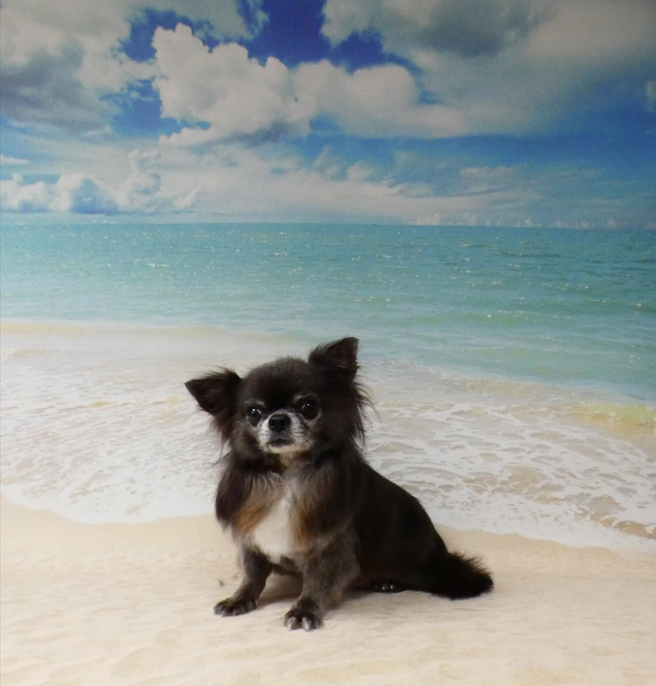
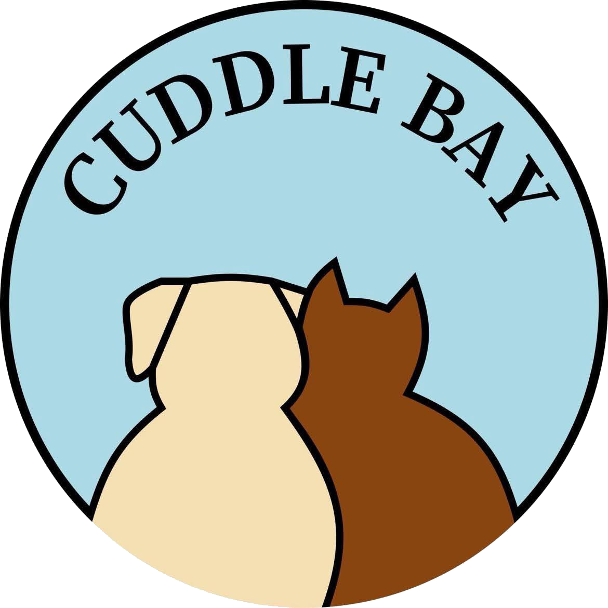

Trusted In-home Pet Care
Cuddle Bay offers high-quality pet sitting* and pet hotel services in Oslo.
You can travel worry-free and be sure your loved one feels comfy and happy.

Cuddle Bay - Pet Care Izabela Dec |
My name is Izabela Dec and I live in Oslo.
For over 20 years I have been working for international companies as a finance expert. In parallel, I have been running temporary home for abused dogs for couple of years.
At certain point of my life I have decided to fully focus on what makes me really happy, which is taking care of our four-legged, furry loved ones. I have turned my hobby into a full-time occupation and this is how Cuddle Bay was born.
I am now professional pet sitter certified from COAPE - Centre Of Applied Pet Ethology, with the license to provide pet hotel services.
I invite you to my cozy, pet friendly zone at Cuddle Bay in Oslo. Cuddle Bay is not just a place. Above all, it is a state of mind where the animal well being and respect are the top priority.
My mission is to provide trusted in-home pet care so you can travel worry free and be sure your loved one feels comfy and happy.
Cuddle Bay - Love, safety and a lot of cuddles guaranteed!
Pet care services |
Pet Hotel |
|
|
Cuddle Bay for your loved ones. Small, cozy space with individual approach to each pet. Max 4 pets in care at the same time. I provide pet care at my home, and I dedicate 100% of my time to my pet clients. I am a certified pet sitter from COAPE (Centre of Applied Pet Ethology) - link Safety, respect and a lot of cuddles guaranteed. |